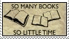
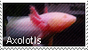

mengxia's sublunary library
this is my personal library. inside, you will find a collection of book recommendations, essays & esoterica; ruminations on literature, language, art, and life. i'm 梦霞mengxia, a depressed cybernetic thing, a bit obsessed with literature and memory.
interests: literature (obviously), including literature from latin america & asia (including south & southeast asia), cinema, anime & animation, foreign languages, visual novels, science fiction, paraliterature, illustration, philosophy, cybernetics, games, and more.

— ☾ —
something connects us, even if you feel like you're the only person in the world. maybe it's just the sadness we share, but maybe it's something else. even if you're the last person left on earth. even if you walk the streets, endless, like wittgenstein's mistress, and no one responds to your calls. i love you. take care out there.
-
.png)
-

-

-
-

-
Subtitle
Nullam sagittis condimentum libero consectetur dapibus. Vivamus aliquet elit id orci hendrerit, id congue nulla laoreet. Cras malesuada maximus dui id scelerisque. In convallis ligula non tincidunt ullamcorper. Maecenas risus magna, elementum sit amet arcu non, imperdiet condimentum justo. Aliquam aliquet neque quis luctus tincidunt. Aliquam nec arcu sed nisl viverra tincidunt.
Subtitle
Nullam sagittis condimentum libero consectetur dapibus. Vivamus aliquet elit id orci hendrerit, id congue nulla laoreet. Cras malesuada maximus dui id scelerisque. In convallis ligula non tincidunt ullamcorper. Maecenas risus magna, elementum sit amet arcu non, imperdiet condimentum justo. Aliquam aliquet neque quis luctus tincidunt. Aliquam nec arcu sed nisl viverra tincidunt.